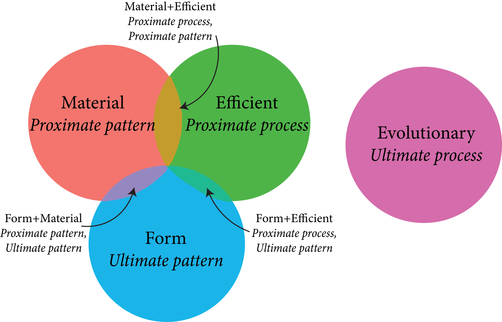

class: right, middle, title-slide, bg_fungus <h2>natural selection does not come naturally</h2> <br> <h3>getting mired in pattern & process and proximate & ultimate causality</h3> <br/> .left-align[ <div class="contact"> <div class="webpage"><i class="far fa-address-card" style="color: #9e4e20;"></i> <a href="https://ledelaney.org" target="_blank">@ledelaney.org</a><br></div> <i class="fa fa-github" style="color: #9e4e20"></i> <a href="https://github.com/ledelaney" target="_blank">@ledelaney</a><br> <i class="fa fa-twitter" style="color: #9e4e20"></i> <a href="https://twitter.com/emergentlyLucy" target="_blank">@emergentlyLucy</a> </div>] --- class: top, center, bg_sunflower -- <h2>biology education has a problem</h2> .footnote-dark[ Momsen _et al._, 2010] --- class: top, center, bg_sunflower <h2>biology education has a problem</h2> <br> <h3><i class="far fa-tired fa-lg"></i> biology is just memorization!</h3> .footnote-dark[ Momsen _et al._, 2010] --- class: top, center, bg_sunflower <h2>biology education has a problem</h2> <br> .footnote-dark[ Momsen _et al._, 2010] --- class: top, center, bg_sunflower <h2>biology education has a problem</h2> <br> <h3><i class="far fa-meh-rolling-eyes fa-lg"></i> why does this even matter?</h3> .footnote-dark[ Momsen _et al._, 2010; Coley & Tanner, 2015] --- class: top, center, bg_lobster -- <br> <br> <h3 style="font-size: 42px;">M RCAN AS ADN ANC AA AC LUM K</h3> Countdown: <span id="demo1">10 </span> Seconds <button type="button" class="btn btn-outline-info" onclick="myTimerObj1.start()">Start counter</button> .footnote-light[ Heath & Heath, 2007] --- class: top, center, bg_lobster .footnote-light[ Heath & Heath, 2007] -- <br> <br> <br> <h3 style="font-size: 42px;">M RCAN AS ADN ANC AA AC LUM K</h3> --- class: top, center, bg_lobster .footnote-light[ Heath & Heath, 2007] -- <br> <br> <h3 style="font-size: 42px;">MRCA NASA DNA NCAA ACLU MLK</h3> Countdown: <span id="demo1">10 </span> Seconds <button type="button" class="btn btn-outline-info" onclick="myTimerObj1.start()">Start counter</button> .footnote-light[ Heath & Heath, 2007] --- class: top, center, bg_lobster .footnote-light[ Heath & Heath, 2007] -- <br> <br> <br> <h3 style="font-size: 42px;">MRCA NASA DNA NCAA ACLU MLK</h3> -- .bitlarger[ .blue[Remembering concepts is far easier than remembering raw data!]] --- class: top, center, bg_swan -- <h2 style="color: #E03917;">evolutionary theory is the concept behind the raw data</h2> .footnote-light[ Dobzhansky, 1973] --- class: top, center, bg_swan <h2 style="color: #E03917;">evolutionary theory is the concept behind the raw data</h2> .swantext[ .bitlarger[ 🦠 🌾 🐡 🪲 🦧]] .footnote-light[ Dobzhansky, 1973] --- class: top, center, bg_bison -- <h2>biology is a historical science</h2> .footnote-light[ Mayr, 1963] -- .bisontext[ <h3 style="color: floralwhite;">distinguish pattern from generating process</h3>] --- class: top, center, bg_bison <h2>biology is a historical science</h2> .bisontext[ <h3 style="color: floralwhite;">distinguish pattern from generating process</h3> <h3 style="color: floralwhite;">distinguish proximate and ultimate causes for patterns & processes</h3>] .footnote-light[ Mayr, 1963] --- class: middle, bg_bat -- ## study design -- 🖐️ open-ended questions -- ✌️ weeks to answer -- 👆 at the beginning of the semester, 👆 at the end --- class: middle, left, bg_cat ## tinbergen’s four questions .opaque[ .cattext[ Instead of having one species perfectly adapted to life on earth, there are millions of different species. Why is this the case?]] <br/> -- <table> <tr> <th> </th> <th>pattern (static)</th> <th>process (dynamic)</th> </tr> <tr> <th>proximate (individual)</th> <td> <span style="opacity: 0"> <br/> .italic[material]: <br/> <br/> .bitlarger[🧬 🦴] <br/> <br/> </span> </td> <td> <span style="opacity: 0"> <br/> .italic[mover]: <br/> <br/> .bitlarger[🎲 💘] <br/> <br/> </span> </td> </tr> <tr> <th>ultimate (species)</th> <td> <span style="opacity: 0"> <br/> .italic[form]: <br/> <br/> .bitlarger[🌺 🐫] <br/> <br/> </span> </td> <td> <span style="opacity: 0"> <br/> .italic[formal]: <br/> <br/> .bitlarger[⚖️ 🌦️] <br/> <br/> </span> </td> </tr> </table> .footnote-light[ .small-font[Aristotle; Tinbergen, 1963; Nesse, 2013]] --- class: middle, left, bg_cat ## tinbergen’s four questions .cattext[ Instead of having one species perfectly adapted to life on earth, there are millions of different species. Why is this the case?] <br/> <table> <tr> <th> </th> <th>pattern (static)</th> <th>process (dynamic)</th> </tr> <tr> <th>proximate (individual)</th> <td> <span style="opacity: 0"> <br/> .italic[material]: <br/> <br/> .bitlarger[🧬 🦴] <br/> <br/> </span> </td> <td> <span style="opacity: 0"> <br/> .italic[mover]: <br/> <br/> .bitlarger[🎲 💘] <br/> <br/> </span> </td> </tr> <tr> <th>ultimate (species)</th> <td> <span style="opacity: 0"> <br/> .italic[form]: <br/> <br/> .bitlarger[🌺 🐫] <br/> <br/> </span> </td> <td> <span style="opacity: 0"> <br/> .italic[formal]: <br/> <br/> .bitlarger[⚖️ 🌦️] <br/> <br/> </span> </td> </tr> </table> .footnote-light[ .small-font[Aristotle; Tinbergen, 1963; Nesse, 2013]] --- class: middle, left, bg_cat ## tinbergen’s four questions .cattext[ Instead of having one species perfectly adapted to life on earth, there are millions of different species. Why is this the case?] <br/> <table> <tr> <th> </th> <th>pattern (static)</th> <th>process (dynamic)</th> </tr> <tr> <th>proximate (individual)</th> <td> <span style="opacity: 1"> <br/> .italic[material]: <br/> <br/> .bitlarger[🧬 🦴] <br/> <br/> </span> </td> <td> <span style="opacity: 0"> <br/> .italic[mover]: <br/> <br/> .bitlarger[🎲 💘] <br/> <br/> </span> </td> </tr> <tr> <th>ultimate (species)</th> <td> <span style="opacity: 0"> <br/> .italic[form]: <br/> <br/> .bitlarger[🌺 🐫] <br/> <br/> </span> </td> <td> <span style="opacity: 0"> <br/> .italic[formal]: <br/> <br/> .bitlarger[⚖️ 🌦️] <br/> <br/> </span> </td> </tr> </table> .footnote-light[ .small-font[Aristotle; Tinbergen, 1963; Nesse, 2013]] --- class: middle, left, bg_cat ## tinbergen’s four questions .cattext[ Instead of having one species perfectly adapted to life on earth, there are millions of different species. Why is this the case?] <br/> <table> <tr> <th> </th> <th>pattern (static)</th> <th>process (dynamic)</th> </tr> <tr> <th>proximate (individual)</th> <td> <span style="opacity: 1"> <br/> .italic[material]: <br/> <br/> .bitlarger[🧬 🦴] <br/> <br/> </span> </td> <td> <span style="opacity: 1"> <br/> .italic[mover]: <br/> <br/> .bitlarger[🎲 💘] <br/> <br/> </span> </td> </tr> <tr> <th>ultimate (species)</th> <td> <span style="opacity: 0"> <br/> .italic[form]: <br/> <br/> .bitlarger[🌺 🐫] <br/> <br/> </span> </td> <td> <span style="opacity: 0"> <br/> .italic[formal]: <br/> <br/> .bitlarger[⚖️ 🌦️] <br/> <br/> </span> </td> </tr> </table> .footnote-light[ .small-font[Aristotle; Tinbergen, 1963; Nesse, 2013]] --- class: middle, left, bg_cat ## tinbergen’s four questions .cattext[ Instead of having one species perfectly adapted to life on earth, there are millions of different species. Why is this the case?] <br/> <table> <tr> <th> </th> <th>pattern (static)</th> <th>process (dynamic)</th> </tr> <tr> <th>proximate (individual)</th> <td> <span style="opacity: 1"> <br/> .italic[material]: <br/> <br/> .bitlarger[🧬 🦴] <br/> <br/> </span> </td> <td> <span style="opacity: 1"> <br/> .italic[mover]: <br/> <br/> .bitlarger[🎲 💘] <br/> <br/> </span> </td> </tr> <tr> <th>ultimate (species)</th> <td> <span style="opacity: 1"> <br/> .italic[form]: <br/> <br/> .bitlarger[🌺 🐫] <br/> <br/> </span> </td> <td> <span style="opacity: 0"> <br/> .italic[formal]: <br/> <br/> .bitlarger[⚖️ 🌦️] <br/> <br/> </span> </td> </tr> </table> .footnote-light[ .small-font[Aristotle; Tinbergen, 1963; Nesse, 2013]] --- class: middle, left, bg_cat ## tinbergen’s four questions .cattext[ Instead of having one species perfectly adapted to life on earth, there are millions of different species. Why is this the case?] <br/> <table> <tr> <th> </th> <th>pattern (static)</th> <th>process (dynamic)</th> </tr> <tr> <th>proximate (individual)</th> <td> <span style="opacity: 1"> <br/> .italic[material]: <br/> <br/> .bitlarger[🧬 🦴] <br/> <br/> </span> </td> <td> <span style="opacity: 1"> <br/> .italic[mover]: <br/> <br/> .bitlarger[🎲 💘] <br/> <br/> </span> </td> </tr> <tr> <th>ultimate (species)</th> <td> <span style="opacity: 1"> <br/> .italic[form]: <br/> <br/> .bitlarger[🌺 🐫] <br/> <br/> </span> </td> <td> <span style="opacity: 1"> <br/> .italic[formal]: <br/> <br/> .bitlarger[⚖️ 🌦️] <br/> <br/> </span> </td> </tr> </table> .footnote-light[ .small-font[Aristotle; Tinbergen, 1963; Nesse, 2013]] --- class: top, center, bg_turtle -- .turtletext[ ## What happened?] --- class: top, center, bg_fish -- <br>  --- class: top, center, bg_fish .pull-left[ <img src="css/images/figs/pre-post-causes-empty.png" width="450px"/>] .pull-right-low[ ] --- class: top, center, bg_fish .pull-left[ <img src="css/images/figs/pre-post-causes-r1.png" width="450px"/>] .pull-right-low[ ] --- class: top, center, bg_fish .pull-left[ <img src="css/images/figs/pre-post-causes-r1-arrows.png" width="450px"/>] .pull-right-low[ ] --- class: top, center, bg_fish .pull-left[ <img src="css/images/figs/pre-post-causes-final.png" width="450px"/>] .pull-right-low[ ] -- <h2>.italic[How] are students constructing explanations?</h2> --- class: top, center, bg_sting -- <h2 style="color: rgb(223, 6, 114);">Schemas or p-prims?</h2> --- class: left, bg_peacock -- .pea-left[ <h3>Reasoning by way of analogy to humans (anthropocentric)</h3>] -- .pea-right[ <h3>Reasoning by way of the outcome (teleological)</h3>] -- .pea-text-left[ .italic[Cave fish lose their eyesight because if you don’t use something the body will not maintain it, like if you stop exercising you lose your muscles.]] --- class: left, bg_peacock .pea-left[ <h3>Reasoning by way of analogy to humans (anthropocentric)</h3>] .pea-right[ <h3>Reasoning by way of the outcome (teleological)</h3>] .pea-text-left[ .italic[Cave fish lose their eyesight because if you don’t use something <b>the body will not maintain it</b>, like if you <b>stop exercising</b> you lose your muscles.]] -- .pea-text-right[ .italic[Wood evolved because so many organisms depend on it for survival.]] --- class: middle, bg_lizard -- ```r coin.flip <- function(n){ flips <- rbinom(n = n, size = 1, prob = 0.5) outcome <- ifelse(flips == 1, yes = "Heads", no = "Tails") table <- table(outcome) / n return(table) } ``` .footnote-dark[ Jolfaee _et al._, 2014] --- class: middle, bg_lizard .footnote-dark[ Jolfaee _et al._, 2014] -- ```r coin.flip(n = 8) ``` ``` ## outcome ## Heads Tails ## 0.75 0.25 ``` -- ```r coin.flip(n = 150) ``` ``` ## outcome ## Heads Tails ## 0.5733333 0.4266667 ``` -- ```r coin.flip(n = 10000) ``` ``` ## outcome ## Heads Tails ## 0.4936 0.5064 ``` --- class: middle, bg_lizard .pull-right-wide[ <img src="css/images/figs/camouflage.png" width="400px"/>] .footnote-dark[ Colorado Springs Gazette-Telegraph 06-01-88, pg. 43] --- class: top, bg_lotus .right-align[ ## Toward better biology education]